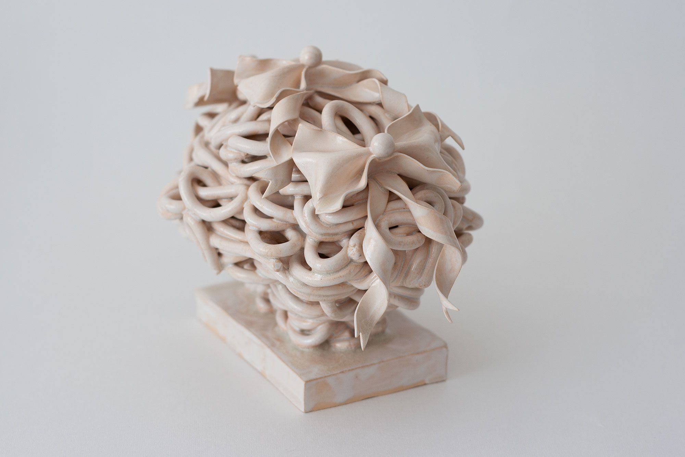
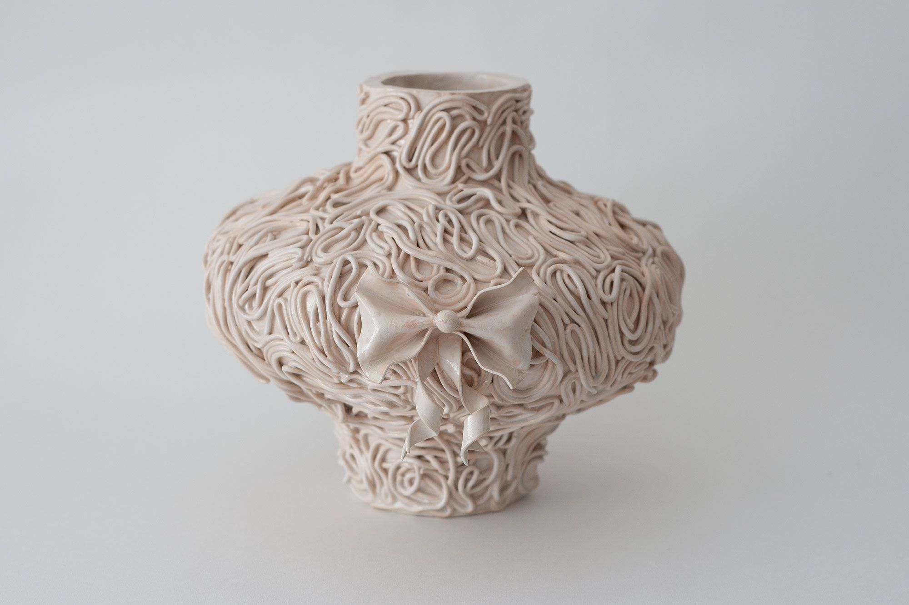
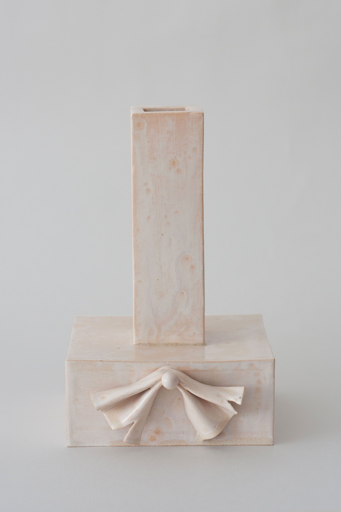
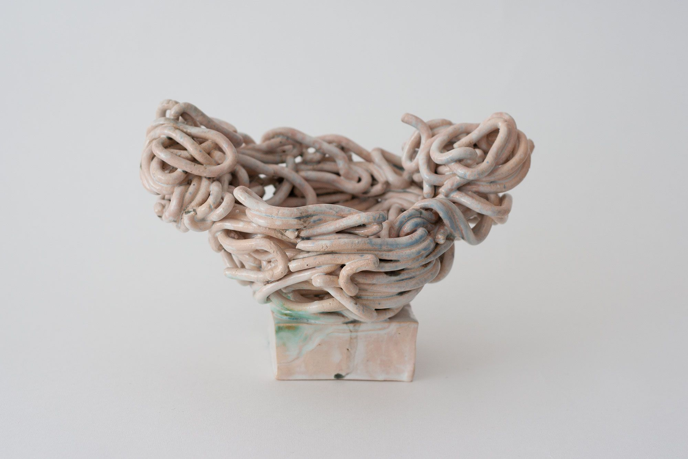
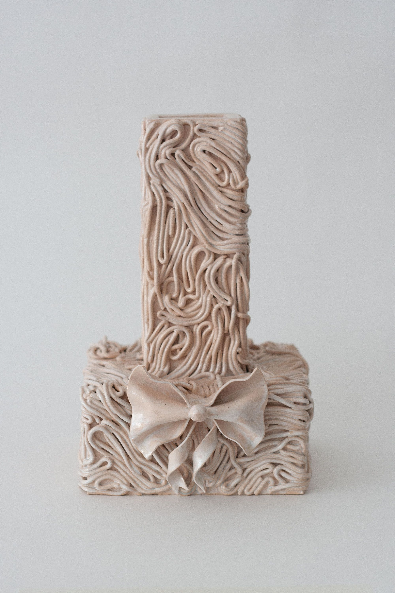
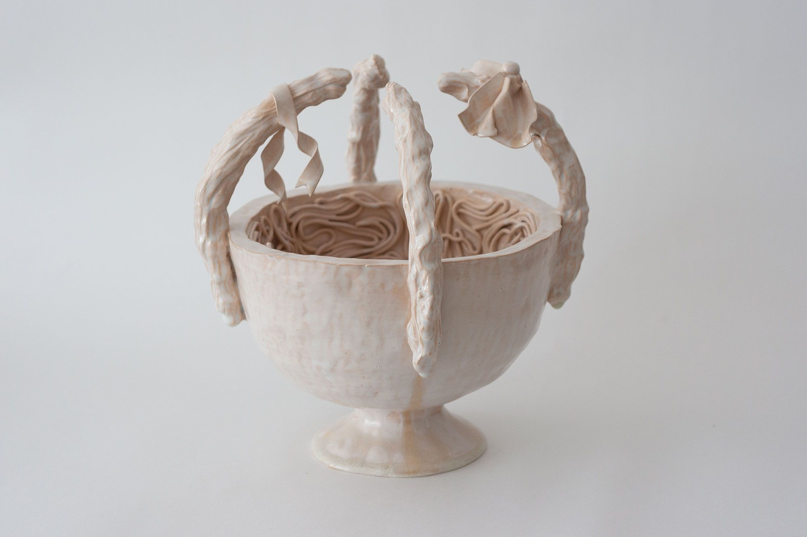
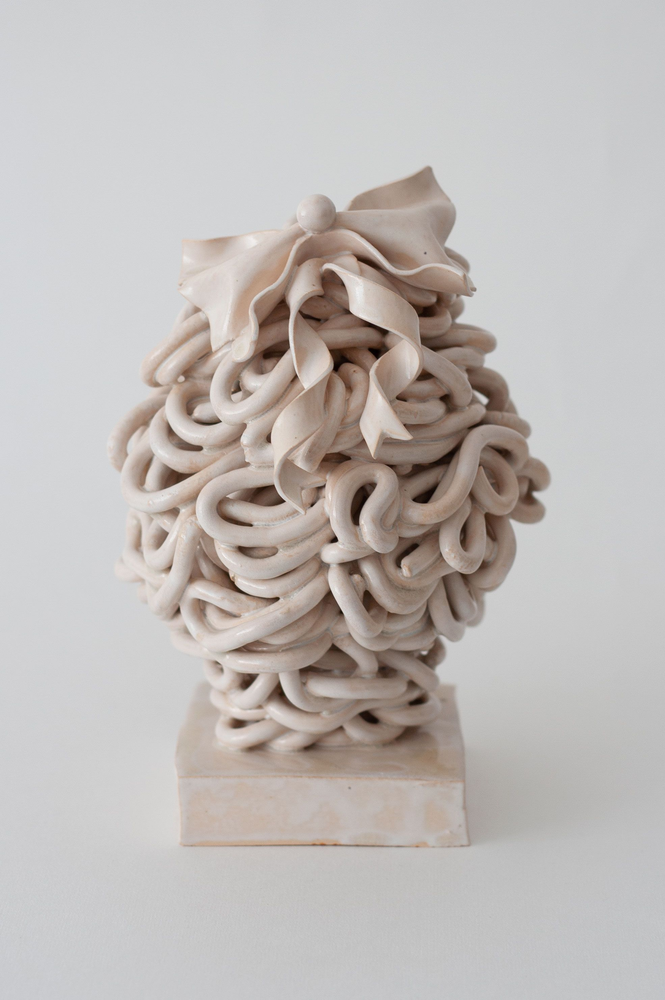
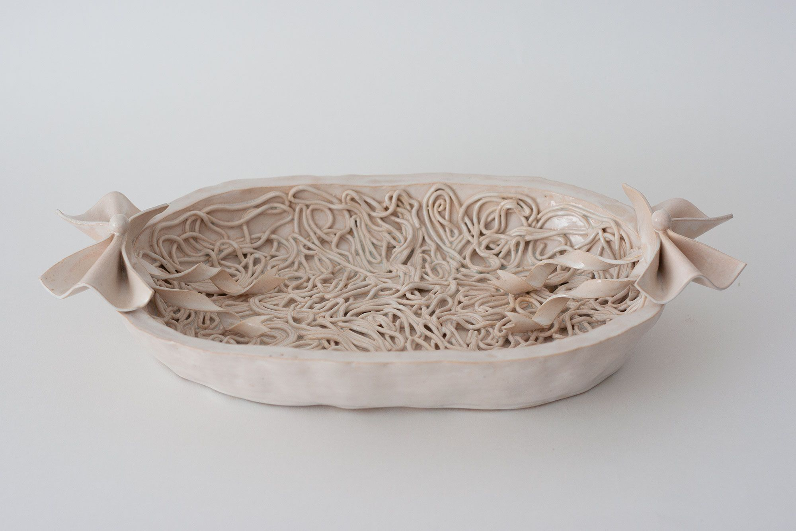
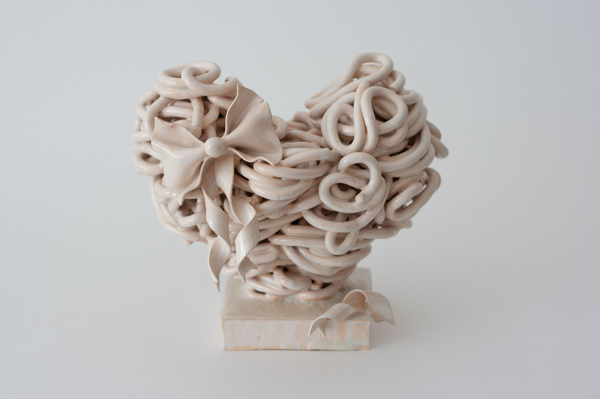
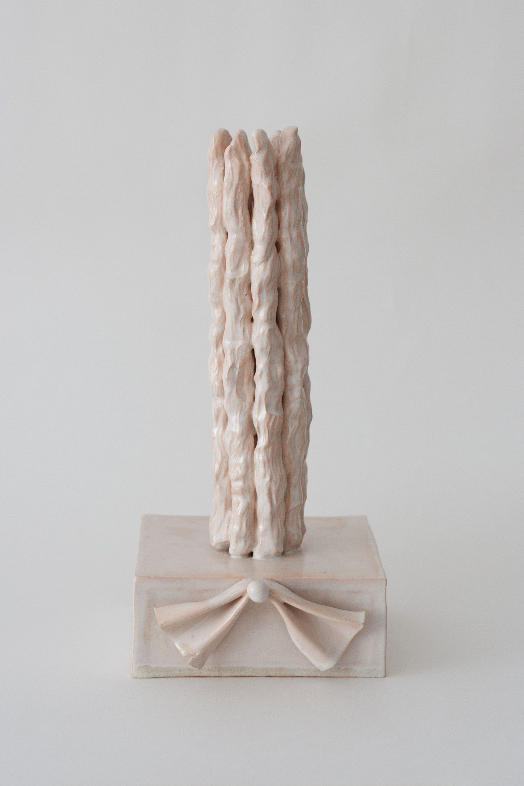

Однажды у меня сломались ботинки, и я понесла их в ремонт обуви. Уже пару дней как шёл дождь, и по пути в мастерскую, весь асфальт был устлан дождевыми червями: одни одиноко извивались в луже, другие, сцепляясь в кольца и узелки, образовывали небольшие компании. Любуясь происходящим, я, наконец, дошла до мастера, отдала обувь, и пошла домой. Дома я приняла ванну, после душа, несколько выпавших волос нарисовали на теле причудливые узоры. Я легла спать, мне приснился сапожник, которому я отнесла вечером свои старые ботинки, взамен им, он подарил мне свои лучшие башмачки, каждый из которых украшал маленький причудливый бантик.

Шёлковая дверца, 2021, глазурированная керамика, 15х20х14 см.

Сон сапожника, 2021, глазурированная керамика, 20х22х24 см.

Пусть размоет дождь, 2021, глазурированная керамика, 20,5х12,7х15 см.

Чап-чап, 2021, глазурированная керамика, 13х14х11,5 см.

Я запуталась, 2021, глазурированная керамика, 23х13,5х16 см.

Раненая лента, 2021, глазурированная керамика, 27,5х24,5х24 см.

Сны, сны, сны…, 2021, глазурированная керамика, 18х11,5х12,5 см.

Второе касание, 2020, глазурированная керамика, 8,5х37х20 см.

Небезопасная полночь, 2021, глазурированная керамика, 16х16,5х13 см.

Тортини, 2020, глазурированная керамика, 28х12,5х15 см.